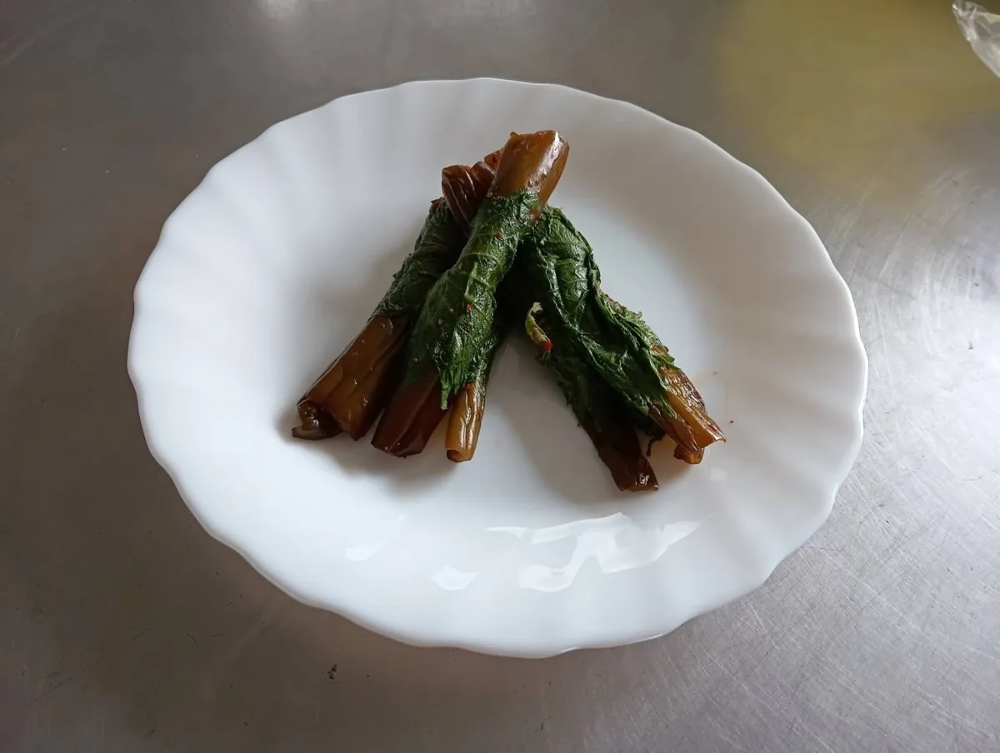

01 / 06漬物
カッパ漬け
写真をタップして拡大
半年以上塩に漬けたきゅうりを青じそで巻き、遠野産の醤油を使った秘伝のたれで仕上げます。私たちの看板の味です。
白いごはんに添えても、日本酒と楽しむ晩酌のひと皿にも。
内容量：200ｇ×3袋
賞味期限：要冷蔵12日間
＊保存料・着色料を一切使用していないため
賞味期限が短くなっております。
開封後はなるべく早めにお召し上がりください。
¥3,000

TONO ROOTS KUDO
Japanese Pickles from Tono, Iwate
半年以上塩に漬けたきゅうりを、青じそで巻いて、秘伝のたれへ。
岩手県遠野市から、白いごはんにも晩酌にも合う、私たちの看板の味をお届けします。
02 / 遠野の風土
TONO, IWATE
Japanese Pickles from Tono, Iwate
山の景色と、
今も語り継がれる昔話。
岩手県遠野市。早池峰山、六角牛山、石上山に囲まれた盆地には田畑が広がり、秋の朝には雲海が盆地を覆うことがあります。
冬は厳しく冷え込み、夏も日が落ちると涼しくなる日が多い土地。山々と田畑の風景が、季節とともに移り変わります。
この土地では、風景のなかに昔話が残っています。常堅寺の裏を流れる小川の淵は、かつて河童が暮らしたと伝わる「カッパ淵」。今も語り部が、遠野の言葉で昔話を聞かせてくれます。
そんな民話の里からお届けする、遠野の漬物。ひと皿をきっかけに、この土地の風景や文化にも思いを巡らせていただけたら嬉しく思います。
遠野ROOTS工藤
03 / 漬物づくり
野菜に合わせて、
漬け方を変える。
白かぶは、葉も一緒に国産の塩で浅漬けに。赤かぶは、塩に漬けてから酢を合わせ、鮮やかな赤が小皿を彩ります。
カッパ漬けに使うきゅうりは、青くささを抜くために半年以上、塩に漬けます。それから青じそを巻き、遠野産の醤油を使った秘伝のたれで仕上げます。
塩で漬ける時間も、青じそを巻くひと手間も、野菜のおいしさを食卓へ届けるために。保存料・着色料は使っていません。
TONO
ROOTS
04 / 商品一覧
ごはんのお供に、晩酌に、贈りものに。
「漬物」「贈りもの」「畑の野菜」から、食べる場面に合わせてお選びください。
看板の味、かぶの食べ比べ、季節のおまかせ。
01 / 06漬物
写真をタップして拡大
半年以上塩に漬けたきゅうりを青じそで巻き、遠野産の醤油を使った秘伝のたれで仕上げます。私たちの看板の味です。
白いごはんに添えても、日本酒と楽しむ晩酌のひと皿にも。
内容量：200ｇ×3袋
賞味期限：要冷蔵12日間
＊保存料・着色料を一切使用していないため
賞味期限が短くなっております。
開封後はなるべく早めにお召し上がりください。
¥3,000
02 / 06漬物
写真をタップして拡大
白かぶは葉ごと国産の塩で浅漬けに。赤かぶは、塩に漬けてから酢などで味を調えます。
白と赤、ふたつの漬け方を食べ比べるセットです。いつもの小皿に、味と彩りの違いをどうぞ。
内容量：200ｇ×4袋
賞味期限：要冷蔵10日間
＊保存料・着色料を一切使用していないため
賞味期限が短くなっております。
開封後はなるべく早めにお召し上がりください。
¥2,700
03 / 06漬物
写真をタップして拡大
その季節のおいしい漬物を、店におまかせで5種類。少しずつ食べ比べたい方におすすめです。
春のアスパラや山菜、夏のきゅうり・トマト・枝豆、秋のかぶ・大根、冬の白菜・キャベツなど、その時期の漬物を選んでお届けします。
※こちらのセットにカッパ漬けは含まれません。
内容量：200ｇ×5袋
賞味期限：要冷蔵10日前後
＊野菜によって期限が違うため袋裏側の
期限の確認をお願いいたします
＊保存料・着色料を一切使用していないため
賞味期限が短くなっております。
開封後はなるべく早めにお召し上がりください。
¥3,000
カッパ漬けを含む5袋を、贈る相手の好みに合わせて。
04 / 06贈りもの
写真をタップして拡大
贈る相手の好みに合わせて、ご自身で選べる5袋のセットです。看板のカッパ漬けを含む漬物を詰め合わせます。
受付時期に選べる漬物のなかから組み合わせをお選びください。同じ漬物を複数選ぶこともできます。ごはんやお酒が好きな方への贈りものに。
＊野菜によって期限が違うため袋裏側の期限の確認をお願いいたします
＊選択していただく漬物は重複も可能です。
内容量：200ｇ×5袋
賞味期限：要冷蔵10日前後
＊保存料・着色料を一切使用していないため
賞味期限が短くなっております。
開封後はなるべく早めにお召し上がりください。
¥3,000
A品は2kg以上、ふぞろいなB品は3kg以上。どちらも3,000円。
05 / 06畑の野菜
写真をタップして拡大
遠野で育った旬の野菜を、2kg以上のセットでお届けします。季節の野菜を、いつもの料理で楽しみたい方へ。
A品・B品はどちらも3,000円。A品は2kg以上、B品は形や大きさがふぞろいな野菜を3kg以上詰め合わせます。
内容量：2キロ以上
¥3,000
06 / 06畑の野菜
写真をタップして拡大
形や大きさがふぞろいな旬の野菜を、3kg以上。見た目にこだわらず、日々の料理にたっぷり使いたい方へ。
A品・B品はどちらも3,000円。A品の2kg以上に対し、B品は3kg以上のセットです。
内容量：3キロ以上
¥3,000
05 / つくり手
代表 工藤寛之｜岩手県遠野市
HIROYUKI KUDO
高校時代、遠野緑峰高校の研究班で、仲間とともに伝統野菜「琴畑かぶ」の漬物を研究。漬物屋を営む祖父の助言を受けて仕上げた「琴畑かぶの山葡萄漬け」は、「漬物グランプリ2019」個人の部で最高賞のグランプリを受賞しました。
高校卒業後は、栃木県の農園で4年間、農作物の栽培・販売・Eコマースを学びました。その後、カナダ、ニュージーランド、インドネシアで3年間、農業や食に触れ、遠野へ。帰国後、家業の漬物屋を継ぎました。